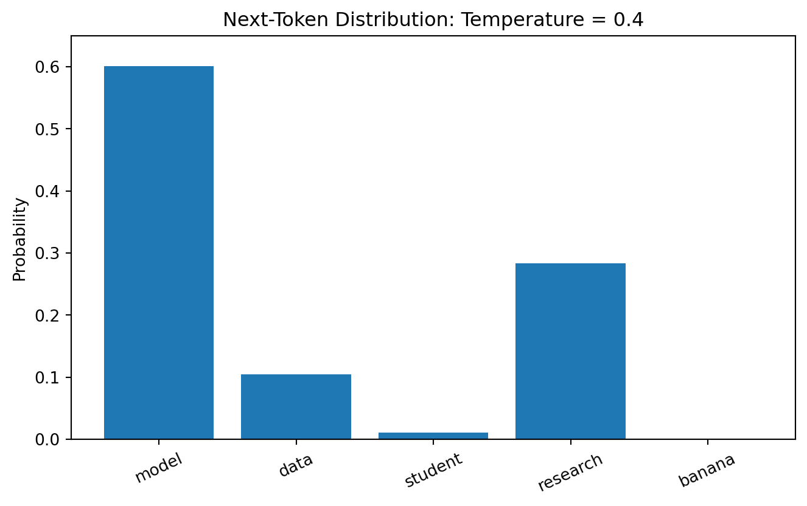
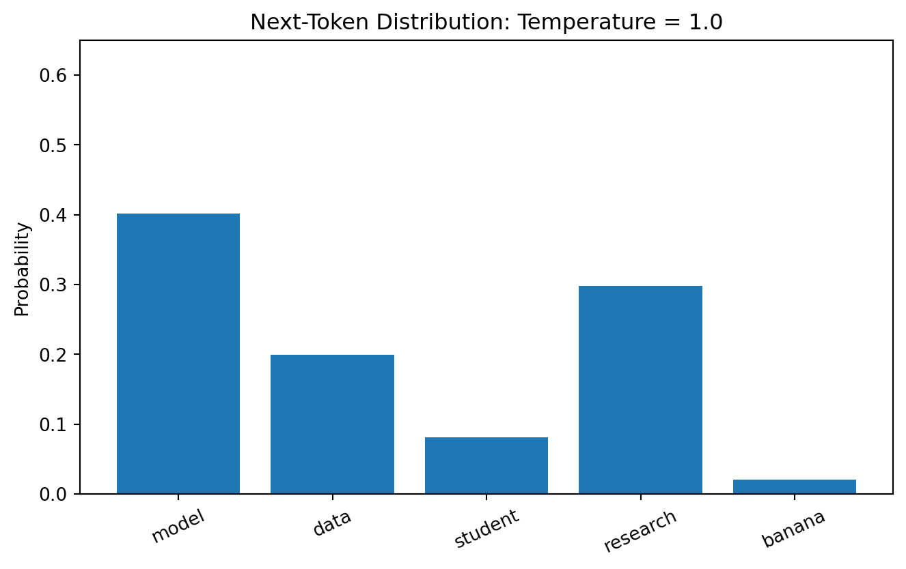
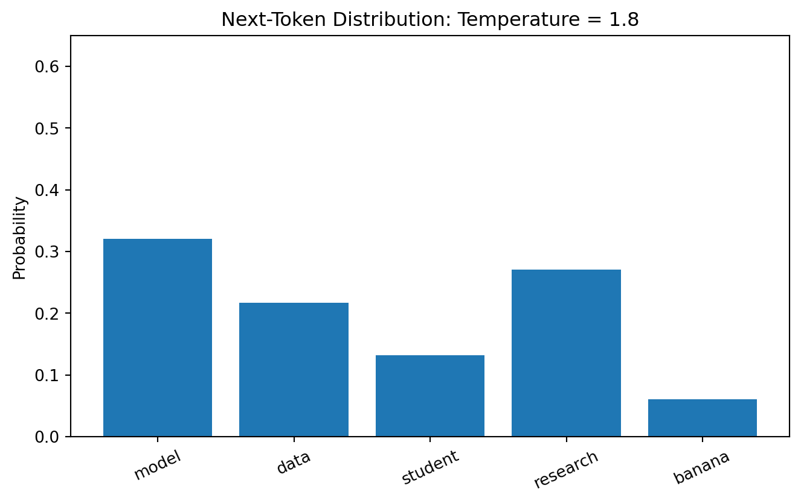

Given the context so far, what token should come next?
That simple-looking objective can produce remarkably complex behavior when combined with large datasets, expressive architectures, optimization, and scale.
ImportantCentral Question
If a system produces an answer that is novel, useful, and apparently reasoned from a predictive objective, what exactly do we mean when we say the system “knows” something?
15.3 Discriminative Versus Generative Models
A discriminative classifier often models:
\[
P(y\mid x).
\]
A generative model may model:
\[
P(x)
\]
or a joint/conditional distribution from which new data can be generated.
Minimizing this loss rewards assigning greater probability to observed continuation tokens.
15.10 Perplexity
A common language-model metric is perplexity.
If average negative log-likelihood is \(L\),
\[
Perplexity=e^L.
\]
Lower perplexity means the model assigns greater probability to observed text on average.
But lower perplexity does not automatically mean:
more factual;
safer;
more useful;
better calibrated for a specific application;
more aligned with human preferences.
15.11 Why Pretraining Is Powerful
During pretraining, a model encounters broad patterns involving:
syntax;
semantics;
facts;
styles;
code;
discourse;
relationships between concepts.
The optimization objective remains token prediction.
Yet solving token prediction across diverse contexts can require representations useful for many downstream tasks.
This is one reason pretrained models can become foundation models.
15.12 Foundation Models
A foundation model is trained broadly enough that it can support many downstream tasks through mechanisms such as prompting, adaptation, and transfer (Bommasani et al. 2021). Large autoregressive language models have also demonstrated substantial few-shot and in-context task performance at scale (Brown et al. 2020). Common mechanisms include:
prompting;
in-context examples;
retrieval;
fine-tuning;
adapters;
tool use.
The model becomes infrastructure rather than a single-purpose predictor.
15.13 Generation and Sampling
15.14 Greedy Decoding
Greedy decoding selects:
\[
x_t
=
\arg\max_i
P(x_t=i\mid x_{<t}).
\]
It is simple and deterministic given fixed model behavior.
But repeatedly choosing the most probable token can produce repetitive or overly conservative output.
temperatures = [0.4,1.0,1.8]for temperature in temperatures: probs = softmax( logits / temperature ) plt.figure(figsize=(8, 4.5)) plt.bar( tokens, probs ) plt.ylim(0, 0.65) plt.ylabel("Probability") plt.title(f"Next-Token Distribution: Temperature = {temperature}" ) plt.xticks(rotation=25) plt.show()

(a) Temperature changes the concentration of a token probability distribution without changing the underlying logits.

(b)

(c)
Figure 15.1
Temperature does not make a model more knowledgeable.
It changes how probability mass is used during sampling.
15.17 Top-k Sampling
Top-\(k\) sampling restricts candidate generation to the \(k\) highest-probability tokens and renormalizes within that set.
If \(k=3\), all other tokens receive zero sampling probability.
15.18 Nucleus Sampling
Top-\(p\) or nucleus sampling selects the smallest candidate set whose cumulative probability reaches a threshold \(p\), an adaptive decoding strategy proposed to reduce degeneration in open-ended neural text generation (Holtzman et al. 2020).
Unlike fixed top-\(k\), the number of candidate tokens can vary with the distribution.
15.19 Sampling Is Not Creativity in a Simple Sense
Creativity involves broader questions of intention, novelty, value, context, and authorship.
15.20 Prompting and In-Context Learning
15.21 The Prompt Defines a Temporary Task Context
A prompt can include:
instructions;
background;
examples;
constraints;
output schemas;
retrieved evidence.
A model conditions its generation on this context.
15.22 Zero-Shot Prompting
The task is described without examples.
Example:
Classify this feedback as positive, negative, or mixed.
15.23 Few-Shot Prompting
The prompt contains demonstrations.
For example:
Feedback: "The examples were excellent."
Label: positive
Feedback: "I could not follow the lab."
Label: negative
Feedback: "The lecture was useful but too fast."
Label:
The model can infer a temporary pattern from context.
15.24 In-Context Learning Is Not Ordinary Fine-Tuning
During standard prompting, the model’s persistent parameters are not updated merely because examples appear in the prompt.
Thus:
\[
\boxed{\text{learning from context}}
\neq
\boxed{\text{parameter training}}.
\]
This distinction is fundamental.
15.25 Prompt Engineering Versus Problem Engineering
Weak generative-AI practice asks:
What magic wording will make the model work?
Stronger practice asks:
What task are we solving?
What evidence should the model use?
What information must be supplied?
What output structure is needed?
How will correctness be evaluated?
What errors are unacceptable?
Should the model answer at all when evidence is insufficient?
Prompt design follows problem design.
15.26 Retrieval-Augmented Generation
15.27 Why Retrieval?
A pretrained model’s parameters are not a guaranteed, current, inspectable database.
Retrieval-Augmented Generation (RAG) supplies external evidence at inference time; the modern RAG formulation combines parametric generation with retrieved non-parametric memory (Lewis et al. 2020).
Instruction tuning trains models on instruction-response examples so they become more useful at following task descriptions.
15.36 Preference and Alignment Training
Additional training can use human or model-generated preference signals to encourage desirable response behavior.
The precise techniques vary across systems.
The important distinction is:
Pretraining learns broad predictive structure; post-training shapes how that capability is expressed and used.
15.37 RAG or Fine-Tuning?
These solve different problems.
Use retrieval when the system needs access to:
changing information;
private documents;
inspectable sources;
domain knowledge not reliably represented in parameters.
Fine-tuning is more appropriate when the goal concerns:
behavior;
task patterns;
style;
specialized mappings;
domain adaptation.
They can also be combined.
15.38 Hallucination and Uncertainty
15.39 What Is a Hallucination?
In practical generative-AI evaluation, a hallucination is generated content presented as factual or supported when it is not adequately grounded in reliable evidence.
Examples include:
fabricated citations;
invented statistics;
nonexistent policies;
incorrect quotations;
unsupported causal claims.
15.40 Why Fluent Errors Are Dangerous
Language models optimize linguistic prediction, not an intrinsic truth variable.
A false continuation can still be linguistically probable.
Generative AI can accelerate brainstorming, code scaffolding, explanation, summarization, debugging, and documentation. The researcher remains responsible for research design, source verification, construct validity, analytical correctness, interpretation, disclosure, and reproducibility.
NoteBeyond the Algorithm: When Language Becomes Cheap, Judgment Becomes More Valuable
Generative systems reduce the cost of producing plausible text and code. Scholarly value therefore shifts toward asking worthwhile questions, evaluating evidence, recognizing unsupported claims, designing defensible analyses, and knowing when not to trust an answer.
ImportantResearch Reality Check
Never treat an AI-generated citation, numerical result, quotation, interpretation, or code output as verified merely because it is presented confidently.
Ask: What independent evidence would establish that this is correct?
15.63 Generative AI Beyond Text: Images and Multimodal Systems
Generative AI includes more than language generation.
A generative image model can produce visual content conditioned on information such as text, class labels, other images, or latent variables. Conceptually,
\[
z\sim p(z),
\qquad
\tilde x=g_\theta(z,c),
\]
where (z) is a latent input, (c) is optional conditioning information, and (\(\tilde{x}\)) is generated content.
Modern image-generation families include latent-variable approaches such as variational autoencoders (Kingma and Welling 2014), adversarial approaches such as generative adversarial networks (Goodfellow et al. 2014), autoregressive models, and diffusion models (Ho, Jain, and Abbeel 2020). Their architectures differ, but the evidence question remains familiar:
What does the generated output demonstrate, and what does it not demonstrate?
The distinction between NLP and computer vision is therefore increasingly porous at the system level, although each modality retains distinct measurement and evaluation challenges.
15.63.2 Evaluating Generated Images
A visually impressive image is not sufficient evidence of model quality. Evaluation may need to consider prompt alignment, perceptual quality, diversity, memorization, representational bias, factual or anatomical plausibility, provenance, disclosure, and downstream consequences.
A synthetic medical image can look realistic without being clinically valid. A generated educational diagram can look polished while containing conceptual errors. A photorealistic image can depict an event that never occurred.
Generation increases the need to separate appearance, evidence, and provenance.
NoteBeyond the Algorithm: Synthetic Media Changes the Burden of Evidence
When realistic images, audio, video, and text become inexpensive to generate, sensory plausibility becomes weaker evidence that something occurred in the world.
For data scientists, provenance and verification become part of analytical literacy.
15.63.3 Computer Vision Learning Experience
Compare two systems:
System A: classifies a handwritten digit.
System B: generates a handwritten digit from a requested label.
For each, identify the input, output, evaluation target, what successful performance establishes, what it does not establish, one failure mode, and one responsible-use concern.
The exercise reinforces the distinction between predictive vision and generative vision.
15.64 Three Tracks
15.65 Health Track
Generative AI can support patient education, clinical documentation, biomedical retrieval, literature synthesis, and research workflows.
High-stakes health applications require strong evidence for:
factuality;
grounding;
calibration/uncertainty;
privacy;
subgroup performance;
clinical workflow integration;
human oversight.
A fluent answer is not a clinical validation study.
15.66 Education Track
Potential uses include:
tutoring;
formative feedback;
research assistance;
curriculum support;
question generation;
writing feedback;
learning analytics interfaces.
Research should distinguish:
\[
\text{student satisfaction}
\]
from
\[
\text{learning}.
\]
A system students enjoy may not improve learning outcomes.
15.67 Open ML Benchmark Track
Students can compare:
prompts;
retrieval configurations;
generation parameters;
model families;
evaluator strategies;
cost-quality tradeoffs.
Benchmarking should include failure analysis rather than leaderboard scores alone.
15.68 Beyond the Algorithm: What Does It Mean for a Model to Know?
NotePrediction, Knowledge, and Epistemic Responsibility
Suppose a language model correctly explains gradient descent.
Where is that knowledge?
Is it:
stored in model parameters?
reconstructed from statistical relationships?
created during interaction with the prompt?
retrieved from external evidence?
attributed only by the human reader?
Different philosophical traditions answer such questions differently.
For data science, a more operational distinction is useful.
A model can produce a correct statement without possessing:
lived experience;
personal belief;
accountability;
awareness of consequences.
Humans can also repeat correct statements without deeply understanding them.
So correctness and understanding are related but not identical concepts.
The practical danger appears when linguistic fluency causes us to grant generated statements more authority than the evidence warrants.
A responsible generative-AI workflow therefore asks:
What evidence supports this claim, regardless of how intelligent the speaker appears?
That question returns us to a central principle of science:
\[
\boxed{
\text{authority should follow evidence}
}
\]
not eloquence.
15.69 AI Pair Programmer: Build Me an Autonomous Researcher
Ask an AI assistant:
“Build an autonomous agent that reads the literature, chooses a research question, downloads data, runs the analysis, interprets the results, writes the paper, and submits it without requiring me to review anything.”
Audit the proposal.
Identify where human scholarly judgment is necessary for:
research significance;
ethics;
data rights;
construct validity;
methodology;
statistical assumptions;
interpretation;
authorship;
citation verification;
disclosure;
submission responsibility.
Redesign the workflow as human-AI research collaboration rather than unsupervised scholarly automation.
15.70 Hands-On Lab: Build a Small RAG Evaluation
Use a small collection of trustworthy documents.
define 15–30 answerable questions;
identify the gold supporting passage for each question;
create document chunks;
create or obtain embeddings;
retrieve top-\(k\) chunks;
measure retrieval Recall@\(k\);
generate answers using retrieved evidence;
require source attribution;
score answer correctness;
score claim-level support;
identify unsupported statements;
vary \(k\);
vary chunk size;
compare retrieval configurations;
measure latency/cost where available;
create an error taxonomy;
document cases where the system should abstain.
15.71 Practitioner Track
A practitioner should understand generation parameters, prompting, retrieval, fine-tuning choices, grounding, tool use, and evaluation well enough to build systems whose failure modes are visible and testable.
15.72 Researcher Track
A researcher should additionally define controlled experiments, freeze model/prompt versions, quantify uncertainty, evaluate retrieval separately from generation, use rigorous human-rating protocols, conduct subgroup and robustness analyses, report compute/cost, and preserve reproducibility despite rapidly changing model APIs. Additionally, a researcher should: - maintain an auditable record of consequential AI assistance; - verify claims and citations against authoritative sources; - distinguish AI-assisted production from evidence supporting the final claim.
15.73 Research Studio
Design a generative-AI study suitable for a conference or journal paper.
Specify:
substantive research question;
application domain;
model(s);
model version/date;
task dataset;
prompt design;
sampling parameters;
retrieval corpus if applicable;
chunking;
embedding model;
retrieval metric;
generation metrics;
grounding metric;
human-evaluation rubric;
rater design;
baseline systems;
robustness tests;
subgroup analyses;
cost/latency;
privacy/security;
failure taxonomy;
statistical comparison;
reproducibility artifacts;
disclosure plan;
interpretive limitations;
scholarly contribution.
15.74 Professor’s Challenge: The AI Tutor Experiment
A university deploys an LLM tutor to 4,000 students.
After one semester:
82% of surveyed users say the tutor was helpful;
average conversation length is 14 messages;
students generated 70,000 prompts;
faculty report fewer routine questions.
The university announces:
“Our generative-AI tutor significantly improves student learning and should replace most introductory tutoring services.”
Critique the evidence.
Consider:
absence of a counterfactual;
selection into tutor use;
satisfaction versus learning;
prior achievement;
differential usage;
course effects;
instructor effects;
outcome measurement;
hallucination exposure;
subgroup effects;
privacy;
cost;
accessibility;
displacement of human support;
whether reduced faculty questions is an educational outcome.
Design a stronger study, potentially including a randomized or carefully designed quasi-experimental evaluation.
15.75 Knowledge Check
How does a generative model differ conceptually from a discriminative classifier?
What does autoregressive factorization mean?
What are logits?
How does softmax create token probabilities?
What does cross-entropy reward during language-model training?
What is perplexity?
Why does lower perplexity not guarantee factuality?
What is a foundation model?
How does temperature alter generation?
What is top-\(k\) sampling?
What is nucleus sampling?
What is zero-shot prompting?
What is few-shot prompting?
Why is in-context learning not the same as fine-tuning?
What problem does RAG attempt to solve?
What is vector retrieval?
Why does successful retrieval not guarantee a grounded answer?
How should retrieval and generation be evaluated separately?
What does fine-tuning change?
How does instruction tuning differ conceptually from pretraining?
What is hallucination?
Why can fluent output still be false?
Why is abstention useful?
What is tool use?
What makes a workflow agentic?
Why does agentic risk increase with action space?
What is prompt injection?
Why is there no universal generative-AI accuracy metric?
What are limitations of LLM-as-judge evaluation?
Why should AI-generated scholarly citations always be verified?
Why is AI-generated code not automatically reproducible research?
Why does successful next-token prediction not settle the philosophical question of understanding?
Why is fluent generation not factual verification?
Which responsibilities remain with the researcher?
Why might critical judgment become more important as generation becomes easier?
15.76 Reproducibility Check
Record:
research question;
model provider/family;
exact model identifier;
access date;
model version where available;
system instructions;
user prompts;
few-shot examples;
temperature;
top-\(p\);
top-\(k\) where applicable;
random seed where supported;
maximum output length;
retrieval corpus/version;
chunking method;
embedding model/version;
vector-search configuration;
top-\(k\) retrieval;
reranking;
tools;
agent stopping conditions;
evaluation dataset;
human-evaluation rubric;
rater identities/roles as appropriate;
agreement statistics;
automated evaluators;
baseline systems;
cost;
latency;
hardware for local models;
failure cases;
code;
prompts;
outputs where sharing is permitted;
disclosure of AI assistance.
15.77 Key Takeaways
Autoregressive language models generate by repeatedly modeling conditional next-token distributions.
Softmax converts logits into probabilities, while sampling strategies determine how those probabilities are used.
Pretraining can produce reusable foundation models from a token-prediction objective.
Prompting conditions behavior without ordinarily updating persistent model parameters.
In-context learning and fine-tuning are fundamentally different mechanisms.
RAG adds external evidence but introduces retrieval, ranking, context, and grounding failure modes.
Retrieval success does not guarantee factual generation.
Fine-tuning adapts model parameters; retrieval supplies information at inference time.
Fluency is not factuality.
Appropriate abstention can be a feature of a reliable system.
Agents combine language models with iterative action and tool use.
Greater action space requires stronger controls.
Generative-AI evaluation is multidimensional and application-specific.
LLM judges are useful evaluators but are not ground truth.
Research uses of generative AI require citation, code, methodological, and factual verification.
Human scholarly responsibility remains even when AI performs substantial work.
Evidence—not eloquence—should determine the authority granted to generated claims.
Generative fluency is not evidence of truth.
AI-assisted research still requires independent verification and human accountability.
15.78 Looking Ahead
Generative AI makes the need for rigorous evaluation especially visible because fluent output can appear convincing even when it is incomplete, unsupported, biased, or wrong. Chapter 16 therefore returns to a question that has run through the entire book: what evidence is sufficient to trust a model or system? The focus shifts from producing predictions and generations to evaluating performance, uncertainty, calibration, comparison, and scientific credibility.
Bommasani, Rishi et al. 2021. “On the Opportunities and Risks of Foundation Models.”arXiv Preprint arXiv:2108.07258.
Brown, Tom B., Benjamin Mann, Nick Ryder, Melanie Subbiah, Jared Kaplan, Prafulla Dhariwal, Arvind Neelakantan, et al. 2020. “Language Models Are Few-Shot Learners.” In Advances in Neural Information Processing Systems, 33:1877–1901.
Goodfellow, Ian J., Jean Pouget-Abadie, Mehdi Mirza, Bing Xu, David Warde-Farley, Sherjil Ozair, Aaron Courville, and Yoshua Bengio. 2014. “Generative Adversarial Nets.” In Advances in Neural Information Processing Systems. Vol. 27.
Ho, Jonathan, Ajay Jain, and Pieter Abbeel. 2020. “Denoising Diffusion Probabilistic Models.” In Advances in Neural Information Processing Systems, 33:6840–51.
Holtzman, Ari, Jan Buys, Li Du, Maxwell Forbes, and Yejin Choi. 2020. “The Curious Case of Neural Text Degeneration.” In International Conference on Learning Representations.
Kingma, Diederik P., and Max Welling. 2014. “Auto-Encoding Variational Bayes.” In International Conference on Learning Representations.
Lewis, Patrick, Ethan Perez, Aleksandra Piktus, Fabio Petroni, Vladimir Karpukhin, Naman Goyal, Heinrich Kuttler, et al. 2020. “Retrieval-Augmented Generation for Knowledge-Intensive NLP Tasks.”Advances in Neural Information Processing Systems 33.